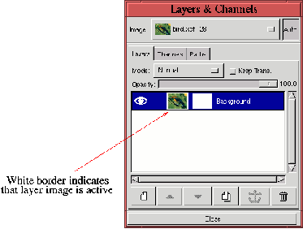
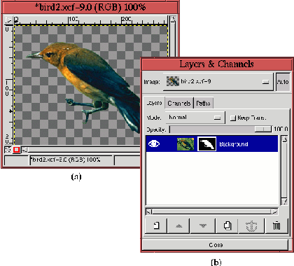
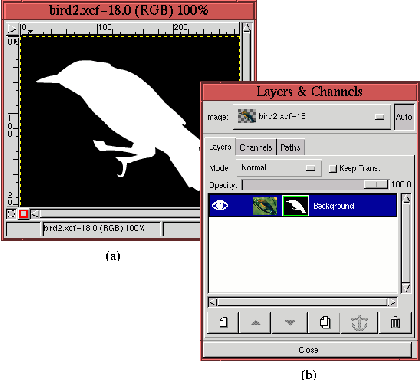
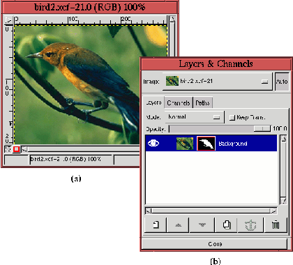

Next: 9.3 Basic
Tools for Up: 9.2 Маска слоя Previous: 9.2.1
Создание маски слоя
Next: 9.3 Basic
Tools for Up: 9.2 Маска слоя Previous: 9.2.1
Создание маски слоя
Как было описано в разделе 9.2.1,
активный слой в диалоге ``Слои, каналы и контуры'' выделяется цветом. Когда
активный слой состоит из собственно слоя и его маски, только один из этих
компонентов может быть активен в одно и то же время. Операции, производимые в
окне рисунка, влияют именно на активный компонент слоя, будь то рисунок, или
маска. Маска слоя становится активной, когда вы нажимаете кнопку мыши на ее
уменьшенной копии. Нажав кнопку мыши на уменьшенной копии рисунка вы вернете
фокус на рисунок.
Разобраться, активен ли сейчас рисунок или маска слоя, можно с помощью белой
рамки, окружающей соответствующую уменьшенную копию. Конечно, если маска слоя
белая, может быть трудно различить дополнительную рамку вокруг уменьшенной
копии. Внимательно посмотрите на рисунок 9.2.1
(b). Можно увидеть, что рамкой окружена копия белой маски слоя, поэтому она
просто выглядит немного больше копии рисунка. Именно так и можно понять, что
маска слоя активна. Перенос фокуса с маски слоя на изображение при помощи щелчка
на уменьшенной копии изображения показан на рисунке 9.9.
Figure: Переключение между активной
маской и активным слоем
 |
Как видно на рисунке, теперь белая рамка окружает уменьшенную копию рисунка.
Маски слоя предоставляют нам возможность непосредственного редактирования
альфа-каналов. Редактируя маску, можно изменять прозрачность соответствующего
слоя. Это иллюстрирует рис. 9.10.
Figure: Редактирование маски в
альфа-канале
 |
Рисунок 9.10
(b) показывает, что рисунок содержит единственный слой с маской. Маска слоя
построена так, что ее белая часть соответствует изображению птицы на
рисунке 9.10
(a), а черная часть - остальным деталям изображения.
На рис. 9.10
(a) показан эффект, создаваемый маской слоя: все, кроме тела птицы, абсолютно
прозрачно. Важно отметить, что фон рисунка (или, грубо говоря, сам рисунок) не
изменился. Просто мы изменили значения альфа-канала. В разделе 9.3
подробно описано, что делать с маской слоя, чтобы получить результат, показанный
на рис. 9.10.
Но сначала опишем еще несколько особенностей работы с масками слоя.
Часто бывает полезно видеть в основном окне только маску слоя, а не результат
ее воздействия на рисунок. Это можно сделать, если кликнуть на уменьшенной копии
маски, нажав клавишу Alt. Изображение слоя в главном окне отключится, и
останется только маска. И вдобавок, рамка вокруг уменьшенной копии маски слоя
станет зеленой, как показано на рис. 9.11.
Figure: Просмотр маски в окне
изображения
 |
Маска, видимая в окне рисунка, показана на рис. 9.11
(a), а зеленая рамка вокруг уменьшенной копии - на рис. 9.11 (b).
Переключить эффект показа только маски можно, еще раз кликнув по ее уменьшенной
копии с нажатой клавишей Alt.
Также бывает полезно визуально отключать эффекты, накладываемые маской слоя.
Это делается щелчком кнопкой мыши на уменьшенной копии маски с нажатой клавишей
Ctrl. Эффекты перестают отображаться, а уменьшенная копия маски
окружается красной рамкой. Это показано на рисунке 9.12.
Figure: Эффекты маски
невидимы
 |
На рис. 9.12
(a) можно видеть полное изображение, а красную рамку вокруг уменьшенной копии
маски - на рис. 9.12
(b).
Маску слоя можно сконвертировать в альфа-канал слоя, выбрав пункт ``Применить
маску слоя'' из меню ``Слои''. Обычно можно обойтись без этого, поскольку
визуально операции над маской и над альфа-каналом отображаются одинаково. После
конвертирования маски в альфа-канал уменьшенная копия маски слоя удаляется из
диалогового окна ``Слои, каналы и контуры''. Диалог ``Применить маску слоя''
позволяет также просто удалить маску без внесения изменений в рисунок. Маску,
сконвертированную в альфа-канал слоя, можно восстановить, выбрав из контекстного
меню пункт ``Добавить маску слоя'', а затем, выбрав в диалоге создания маски
пункт ``Альфа-канал слоя''.
И наконец, маска слоя может быть сконвертирована в выделенную область. Это
делается путем выбора пункта ``Маска->Выделенная область'' из
контекстного меню. Белые пикселы маски будут соответствовать пикселам внутри
выделенной области, черные - пикселам оставшейся не выделенной области, а серые
- пикселам, частично попадающим в область выделения. Заметим, что
конвертирование маски слоя в выделенную область не уничтожает маску.
Next: 9.3 Basic
Tools for Up: 9.2 Маска слоя Previous: 9.2.1
Создание маски слоя
Grigory Bakunov 2003-05-26